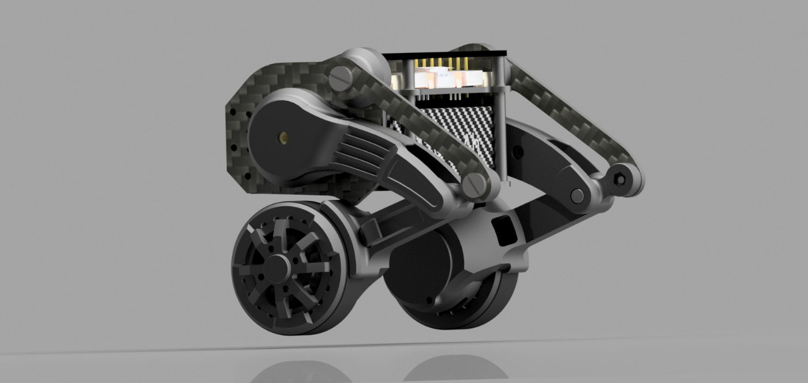
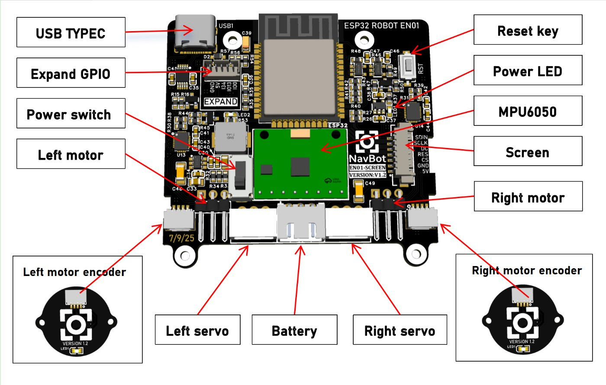

NAVBOT EN01
Kit éducatif de robot à jambes-roues, mécanique, PCB et firmware ouverts



NavBot / fuwei007
Robot à jambes-roues vendu en kit éducatif : chaque jambe articulée se termine par une roue brushless, ce qui donne à la fois la vitesse du roulant, l'équilibre dynamique du pendule inversé et le franchissement de la marche. Le robot s'accroupit, se redresse et encaisse les poussées.
Tout est publié : le modèle mécanique OriginalRobotModel.stp, les fichiers directement exploitables pour l'impression 3D, la découpe carbone et l'usinage CNC, la nomenclature d'achat, les quatre PCB avec leurs schémas et leurs sources EasyEDA, et le firmware Arduino.
Les roues sont pilotées en FOC par des L6234PD013TR via la bibliothèque SimpleFOC, avec des encodeurs magnétiques AS5600 sur le bus I2C. Les jambes utilisent des servos bus FEETECH, dont une carte de debug dédiée multiplexe temporellement les deux liaisons UART sur un seul fil.
L'ESP32 héberge lui-même l'interface de pilotage : la page est stockée en flash et échange du JSON par WebSocket, en point d'accès ou en client sur un réseau existant. Une partition SPIFFS stocke les fichiers d'expressions du visage animé.
Fiche technique- Architecture jambes-roues, équilibre dynamique sur deux roues
- Carte principale ESP32, WiFi 2,4 GHz (5 GHz non supporté)
- Roues brushless en FOC : drivers L6234PD013TR + bibliothèque SimpleFOC
- Encodeurs magnétiques AS5600 en I2C
- IMU MPU6050, sur le même bus I2C que l'encodeur droit
- Jambes sur servos bus FEETECH — ID 1 à gauche, ID 2 à droite, calibration 2048 en position accroupie
- Carte de debug servo : deux UART multiplexés en temps sur un seul fil de signal
- Quatre PCB à fabriquer, schémas et sources EasyEDA fournis
- Mécanique complète : modèle .stp, impression 3D, découpe carbone, CNC, BOM.xlsx
- Firmware Arduino IDE, core ESP32 2.0.3 recommandé
- Interface web en flash, JSON sur WebSocket, modes AP et STA
- Partition SPIFFS pour les expressions du visage
- À prévoir : deux câbles SH 1,0 mm 4 broches double extrémité, ~15 cm
Dépôt officiel — fuwei007/Navbot-EN01
Tous les dépôts NavBot — github.com/fuwei007
Notre fork — equationstratos/Navbot-EN01
Démonstration du robot réel (YouTube)
SimpleFOC — pilotage brushless
ESP ROLL — l'autre auto-équilibré du site
Photos et schéma repris du dépôt officiel fuwei007/Navbot-EN01.